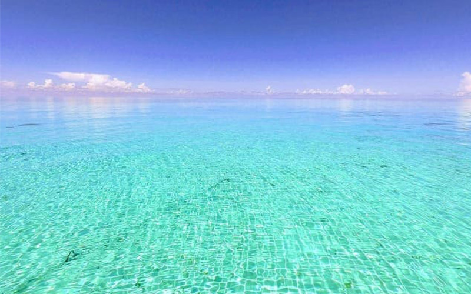
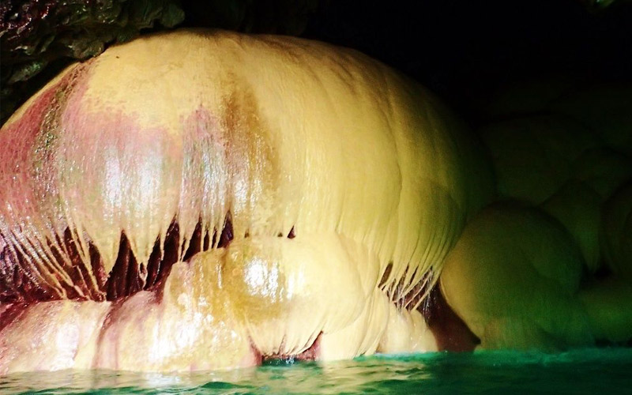
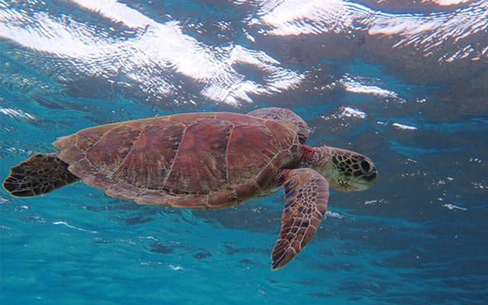

おすすめ観光スポット＆楽しみ方20選！
最終更新日 : 2021/8/30
-
砂山ビーチ

砂山ビーチは、景色を楽しんだり写真撮影するのにぴったりのビーチ。アーチ状の岩が特徴的で、きめ細やかな白い砂と青い海のコントラストは絵画のような美しさです。
ロマンチックな雰囲気を楽しみたい方は、夕日ウォッチングもおすすめですよ。基本情報 砂山ビーチ
アクセス : 宮古空港から約8キロ、車で約25分
住所 ：沖縄県宮古島市平良荷川取
-
八重干瀬 やびじ
八重干瀬（やびじ）とは、宮古島の北側、池間島との中間あたりにある、周囲約25kmの日本最大級のサンゴ礁地帯。
大小100を超える手付かずのカラフルサンゴと周辺に生息する熱帯魚が魅力の宮古島で最も人気の高いマリンアクティビティスポットです。
八重干瀬はその美しさから"日本のグレートバリアリーフ"とも呼ばれており、2013年には日本最大の卓上のサンゴ礁群を有していることから国の天然記念物にも指定されています。基本情報 八重干瀬 やびじ
アクセス : 行き方 宮古空港から車で約30分
住所 ：沖縄県宮古島市平良池間
-
青の洞窟 あおのどうくつ

宮古島の中でも特に観光客に人気なのが青の洞窟です。ボートエントリーで行けるこの洞窟は全長10mの広いドーム状になっており、洞窟内が青く光っている神秘的な場所です。
北風の影響を受けるため、冬場は船を出すことができない日がありますが、洞窟内を満たしている海をシュノーケリングやダイビングで眺めているだけでも冒険気分を味わうことができるので、是非、おすすめです。基本情報 青の洞窟
アクセス : 宮古空港から車で約28分
住所 ：沖縄県宮古島市伊良部池間
-
パンプキン鍾乳洞
宮古島の代表的な鍾乳洞がパンプキンホールです。宮古島随一のパワースポットとしても人気。
干潮時にしか入ることができなため、別名「幻の鍾乳洞」として親しまれており、中に入れば、パンプキン型の鍾乳石を見ることができるでしょう。
長い年月をかけて作られた宮古島の鍾乳洞の景色を、是非お楽しみください。基本情報 パンプキン鍾乳洞
アクセス : 宮古空港から車で約25分
住所 ：沖縄県宮古島市城辺保良1139-1
-
通り池

宮古島の下地島にある珍しい観光スポットが通り池です。
この池は、洞穴を通して二つの池が地下でつながっており、潮の満ち引きによって変化する景色を楽しむことができます。ダイビングではこの地下をくぐるのが人気。基本情報 通り池
アクセス : 宮古空港から車で約30分
住所 ：沖縄県宮古島市伊良部佐和田
-
ウミガメ
宮古島では、アカウミガメ、アオウミガメ、タイマイといった絶滅危惧種に指定されているウミガメを見ることができます。
普段テレビでしか見ることができないウミガメですが、ほぼ確実に出会えるスポットもあるので、是非、宮古島の海で一緒に泳いでみてください。基本情報 ウミガメ
アクセス : 池間港から車で約20分
住所 ：沖縄県宮古島市上野宮国
-
伊良部島

宮古島から北側に伸びる日本で一番長い橋を渡れば、伊良部島へとたどり着きます。ここは人口5000人ほどの海が綺麗な島です。宮古島からのアクセスも良い上に、綺麗な海を見ることができることから、宮古島に来たら必ず訪れたい人気スポットとなっています。
基本情報 伊良部島
アクセス : 宮古空港から車で約15分
住所 ：沖縄県宮古島市平良
-
与那覇前浜

通称「マイパマビーチ」として親しまれ、7キロメートルにもおよぶ白砂の浜と、見渡す限りのエメラルドグリーンの海は東洋一の美しさとも謳われる与那覇前浜（よなはまえはま）ビーチ。対面の来間島にかけて、海の青色がどんどん濃くなる天然美のグラデーションもファンタジック！
全日本トライアスロン宮古島大会のスタート地点としても知られ、マリンスポーツも盛んです。基本情報 与那覇前浜
アクセス : 【車】宮古空港より約15分、平良港より約30分
住所 ：沖縄県宮古島市下地字与那覇1199
-
吉野海岸

シュノーケリングポイントとして人気の高いビーチ。約500メートルの白い砂浜から海に入るとすぐにサンゴ礁があり、ハードコーラル、ソフトコーラルの美しさや、色とりどりの熱帯魚の姿を楽しめます。沖合いにリーフが発達した遠浅の海は非常に波穏やかで、初心者にも安心。宮古島の中でも有数のウミガメの産卵地としても知られています。
基本情報 吉野海岸
アクセス : 【車】宮古空港より約30分
住所 ：沖縄県宮古島市城辺字吉野
-
フナクス海岸

数年前までは、地元の人しか知らない隠れビーチのような存在だったフナクス海岸は、今やシュノーケリングスポットとして、宮古島内でも一番の人気を誇っています。ビーチ入り口には、階段代わりのコンクリートブロックが置かれており、通称「池間ブロック」とも呼ばれています。海を覗くと、手を伸ばせば触れられるほど、サンゴが間近に見られます。
基本情報 フナクス海岸
アクセス : 宮古空港から車で約30分
住所 ：沖縄県宮古島市平良池間
-
渡口の浜 とぐちのはま

渡口の浜は、裸足で走っても気持ちのいいほどサラサラで真っ白な砂浜が約800mも続く、弓状のビーチです。伊良部島の南西部に位置し、宮古島からは伊良部大橋を渡って行くことができます。売店やトイレにシャワーも完備されていて、夏には観光客で賑わいます。
基本情報 渡口の浜 とぐちのはま
アクセス : 宮古空港から車で約45分
住所 ：沖縄県宮古島市伊良部伊良部1391-1
-
新城海岸
宮古島の数あるビーチの中でも「新城海岸」はシュノーケリングにぴったりの場所。流れが穏やかな遠浅の海にはサンゴの森が広がり、色とりどりの熱帯魚に出合えます。フィンやマスクなどはビーチ沿いのマリンショップでレンタルできるので手ぶらで行っても大丈夫。
魚になった気分でエメラルドグリーンに輝く海を泳ぎましょう。基本情報 渡口の浜 とぐちのはま
アクセス : 宮古空港から車で約30分
住所 ：沖縄県宮古島市城辺新城
-
東平安名崎

東平安名崎は宮古島の最東端に位置しています。淀みのない青い海を突き抜けるように、約2kmにもわたって細長い緑の岬が延びています。波と風の音を聞きながら、先端に立つ白い灯台を目指して、舗道を歩きましょう。岬の先端に向かって歩くと、右は太平洋、左は東シナ海となるのだそうです。
都会の喧騒を忘れて、雄大な自然を満喫しに訪れてみてはいかがでしょうか。基本情報 東平安名崎
アクセス : 宮古空港から車で約30分
住所 ：沖縄県宮古島市城辺保良